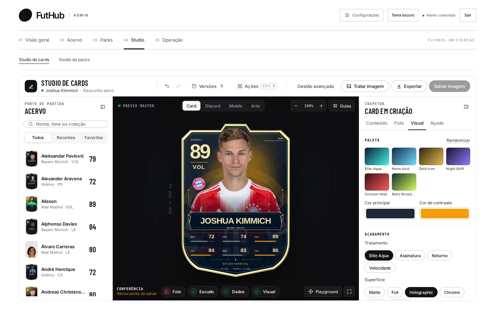
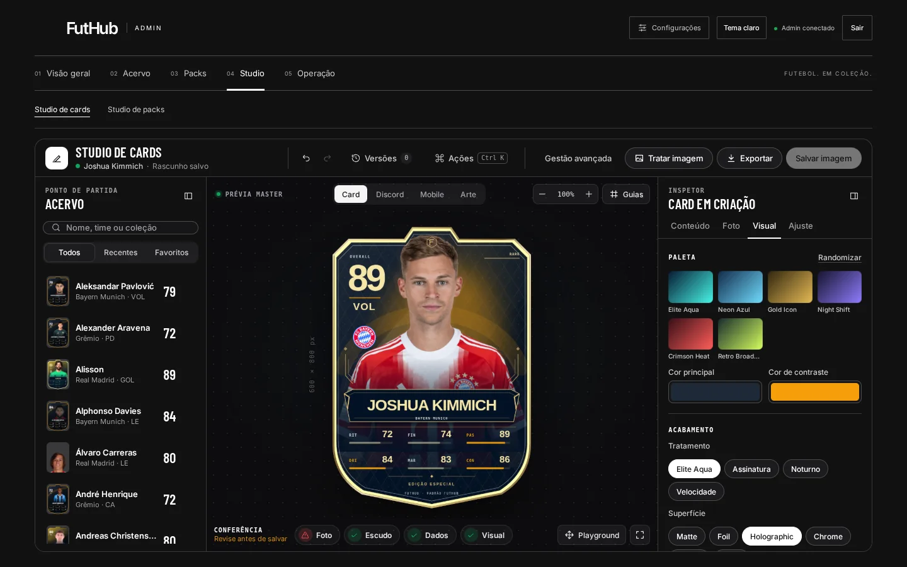
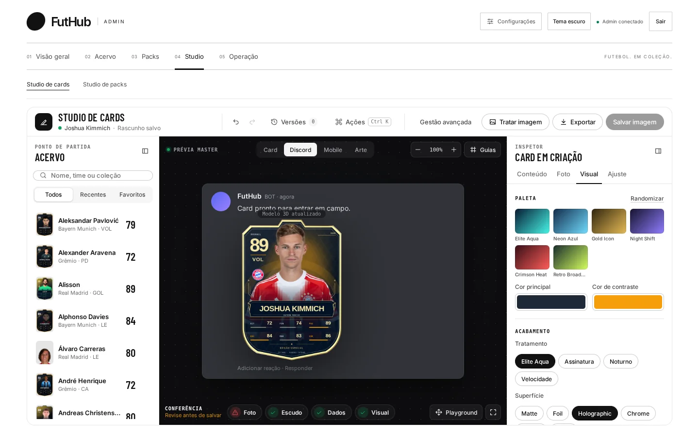
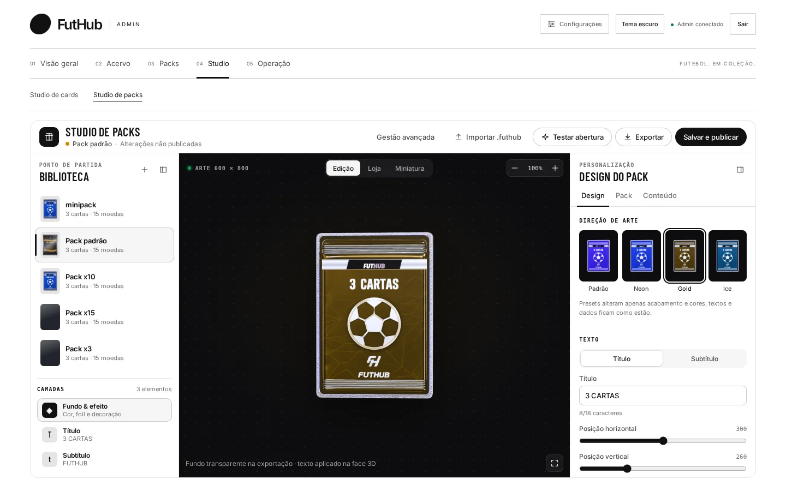
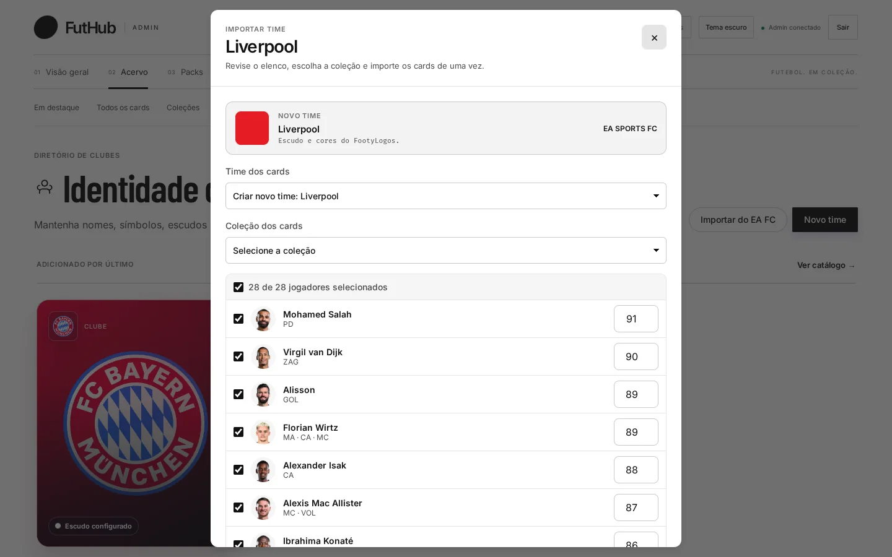
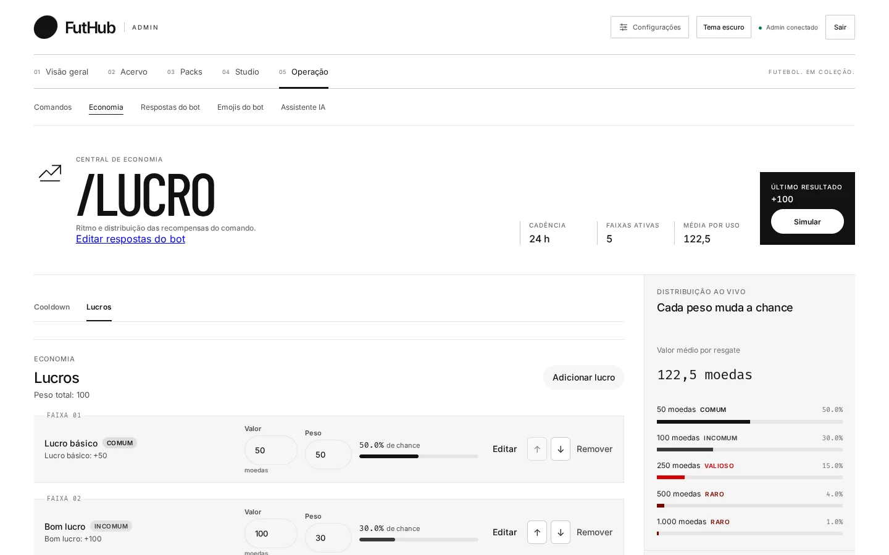
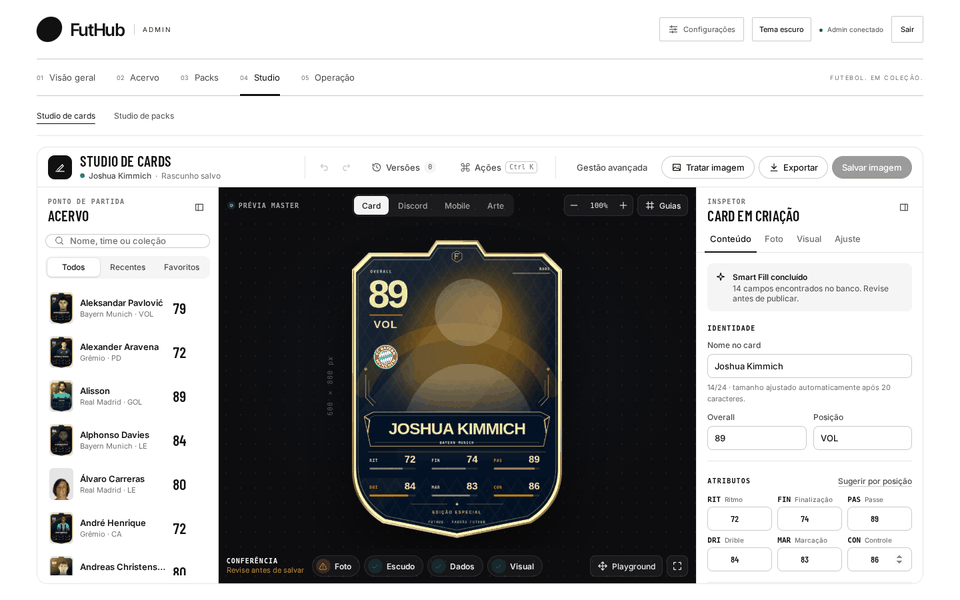
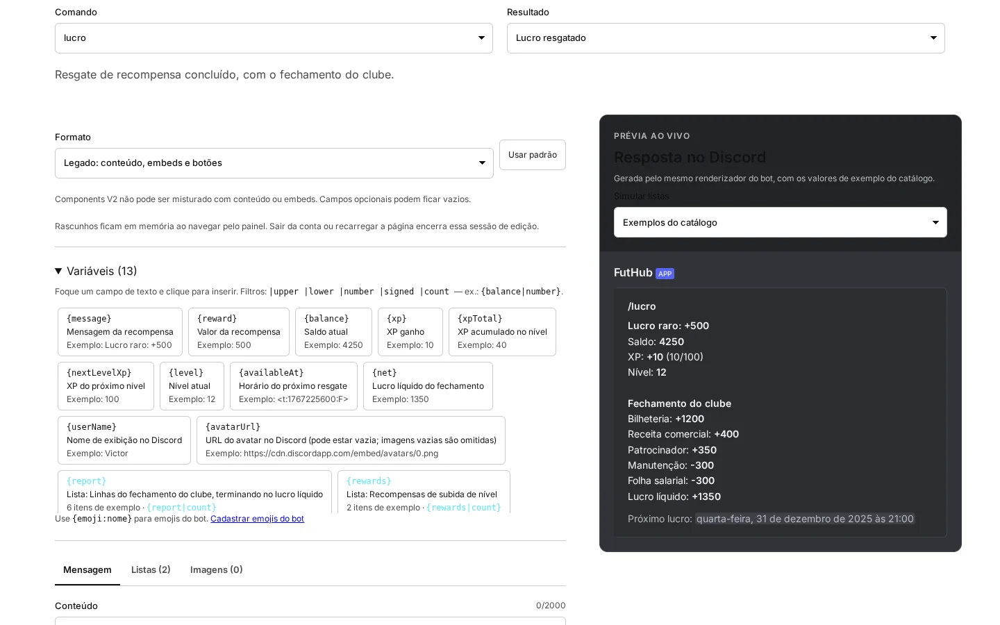

FutHub Admin · Painel de operação
O jogo inteiro numa mesa de trabalho.
Crie cards com a foto real do jogador, desenhe packs em 3D, calibre a economia do /lucro e reescreva cada mensagem do bot. Antes de publicar, você vê como tudo vai aparecer no Discord.


O que dá para fazer
Quatro mesas, um só jogo.
O FutHub é um jogo de coleção de cards de futebol jogado no Discord. O admin é onde o conteúdo nasce e onde as regras do jogo são decididas.

Um card pronto para o Discord em minutos
Escolha o jogador e o Smart Fill completa os dados do banco. Puxe a foto do TheSportsDB e confira o card como card, mensagem no Discord, tela de celular ou arte.
Studio de cards → 02 / Studio de packs
Embalagens 3D que você testa abrindo
Troque entre os presets Padrão, Neon, Gold e Ice, escolha acabamento e efeito, e puxe o lacre para ver a abertura como o jogador vai ver.
Studio de packs → 03 / Acervo
O elenco real de um clube, importado de uma vez
Busque um clube do EA SPORTS FC e traga escudo, cores, jogadores, atributos e fotos. Depois escolha a coleção de destino e marque quem entra.
Acervo e importação → 04 / Operação
Economia que você simula antes de soltar
Defina o intervalo e as faixas de recompensa do /lucro, acompanhe a distribuição de chance ao vivo e role o simulador antes que algum jogador tente.
Na prática
Do jogador ao card, sem sair do Studio.
Joshua Kimmich vem da biblioteca com os dados preenchidos e a foto vem do TheSportsDB. A paleta e o acabamento entram em seguida, e o mesmo card é conferido nas quatro superfícies onde vai aparecer.

Como funciona
Três passos até a próxima edição.
O fluxo completo, com cada tela, está em Como funciona.
Traga o elenco
Importe um clube do EA SPORTS FC ou cadastre os cards à mão. Times, escudos e coleções ficam organizados no acervo.
Desenhe card e pack
No Studio você define foto, paleta, acabamento e embalagem 3D e confere a prévia em cada superfície antes de salvar.
Publique e calibre
Ponha o pack à venda com preço e regras de quais cards entram nele. Ajuste o /lucro e a resposta do bot que o jogador vai receber.
Bot no Discord
Cada mensagem do bot, editável e com prévia ao vivo.
Escolha o comando e o resultado, insira variáveis como {reward} e {balance}, monte listas e imagens. A prévia ao lado usa o mesmo renderizador do bot, com dados de exemplo do catálogo.

FutHub Admin
Tudo que o jogo precisa, num painel só.
Do elenco real ao card no Discord: importe, desenhe, embale, precifique e publique sem abrir o código nem o banco.